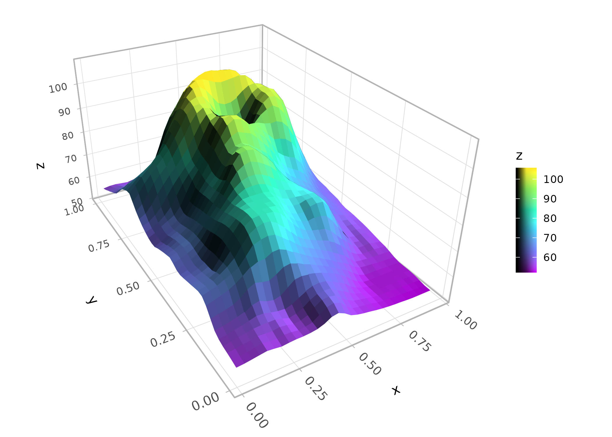
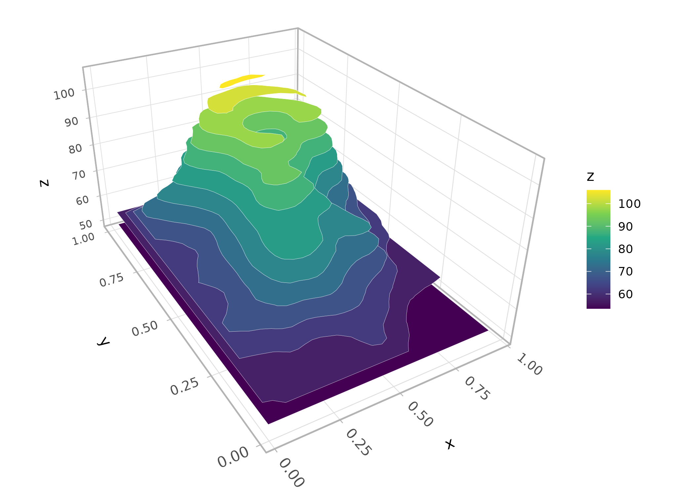
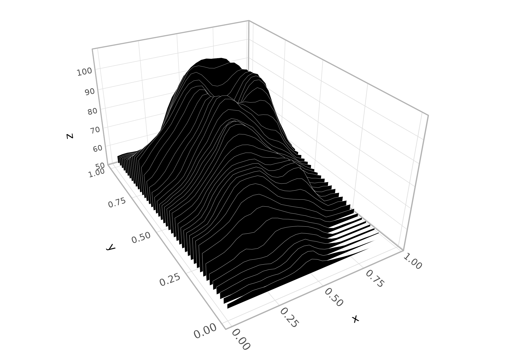
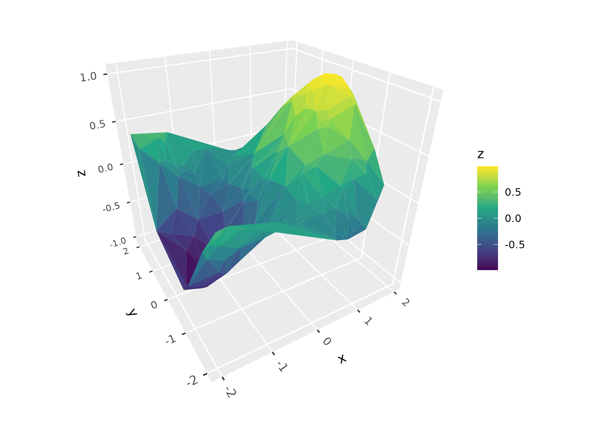
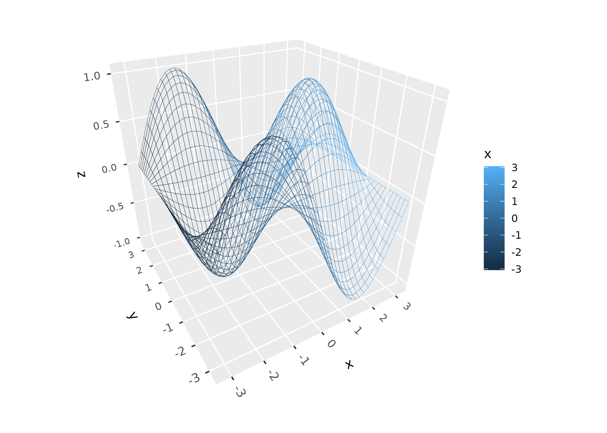
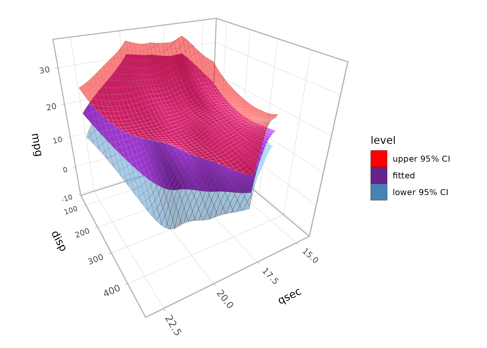
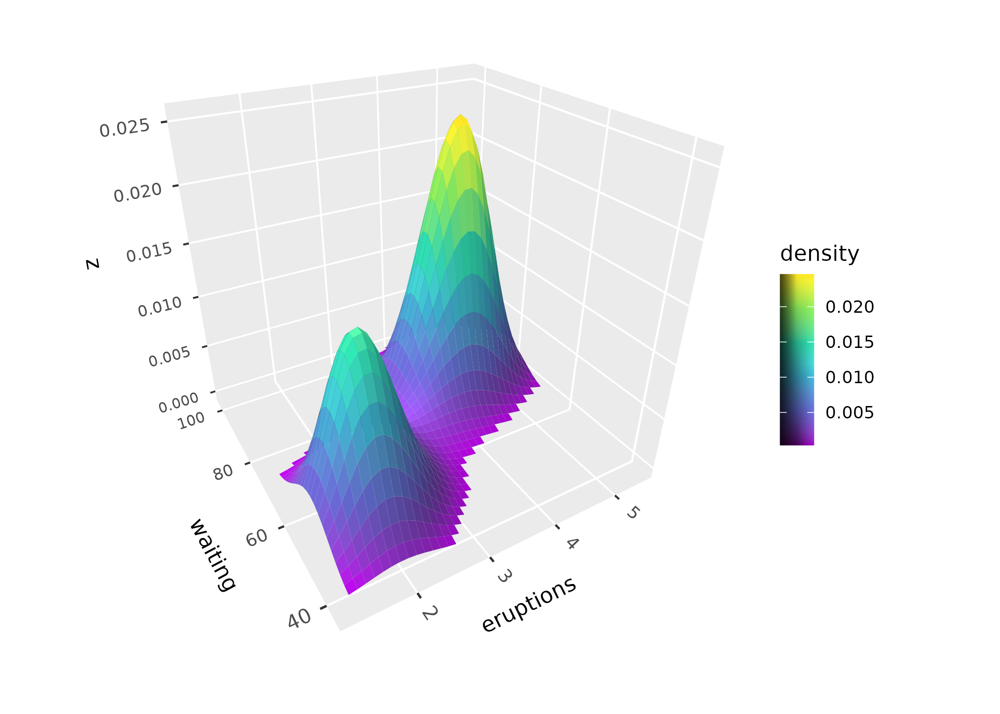
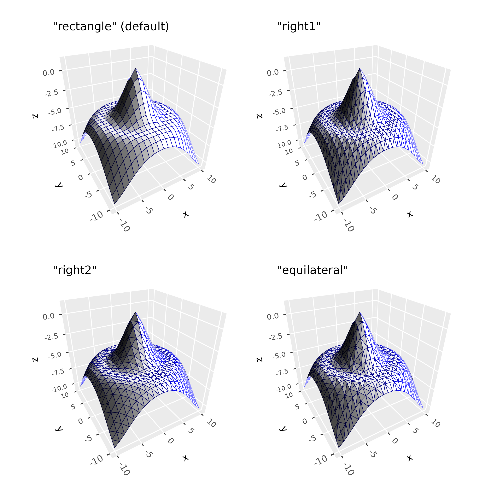
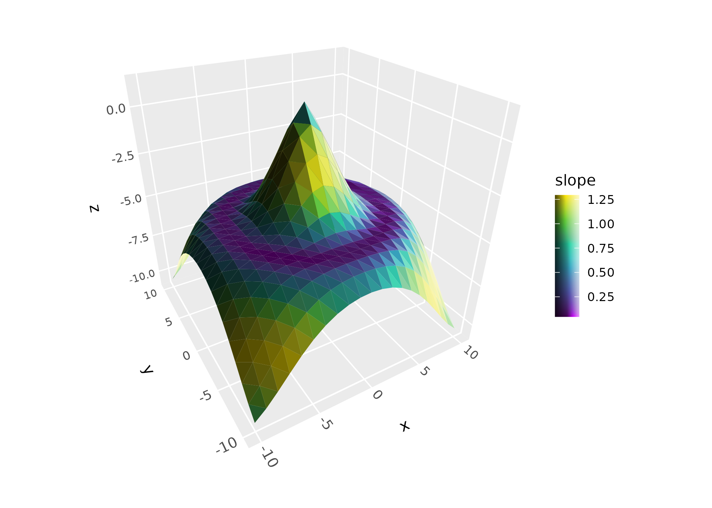
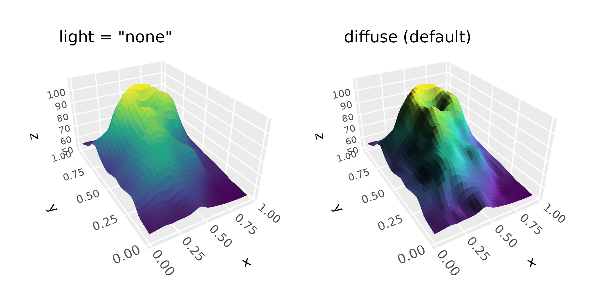

Surfaces are ggcube’s richest feature area. This article gives an
overview of the geoms and stats that work together to render continuous
surfaces from various data sources. “Surface” here means a data object
with a single z value for each (x, y) position, like a heightmap or
terrain model. This vignette doesn’t cover hulls
(geom_hull_3d()) or columnar surfaces
(geom_col_3d()).
Surfaces can be rendered from several data sources and in several visual styles, using a system of interchangeable geoms and stats. ggcube currently includes three surface geoms:
-
geom_surface_3d(): tessellated mesh, rendered as a solid surface or a wireframe -
geom_contour_3d(): stacks of elevation contour polygons -
geom_ridgeline_3d(): arrays of horizontal cross-section polygons
Each of these geoms can render data produced by one of four surface stats:
-
stat_surface_3d(): user-supplied irregular or gridded data -
stat_function_3d(): mathematical functions -
stat_smooth_3d(): statistical models fit to user-supplied data -
stat_density_3d(): 2D kernel density surface
Data sources
Surface data comes in two forms:
- Regular grids have a z value at every combination of x and y positions — like a raster or DEM. Grid data can be supplied directly by the user, or generated internally by a stat.
- Irregular points are scattered (x, y, z) observations with no grid structure. These are triangulated via Delaunay tessellation to produce a surface mesh.
stat_surface_3d() auto-detects which type of data it
receives and handles both. All three surface geoms work with regular
grid data, but only geom_surface_3d() supports irregular
points (since ridgelines and contours require an underlying grid
structure).
Surface geoms
Three geoms render surface data in different visual styles.
Tessellated mesh
geom_surface_3d() is the primary surface geom. You can
use it to create a solid surface as shown here, or set
fill = NA to produce a wireframe. It tessellates data into
polygon tiles and supports both regular grids and irregular point
data:
p <- ggplot(mountain, aes(x, y, z, fill = z, color = z)) +
coord_3d(ratio = c(1, 1.5, .75)) +
scale_fill_viridis_c() +
scale_color_viridis_c() +
theme_light()
p + geom_surface_3d(light = light(direction = c(1, 0, .5),
mode = "hsv", contrast = 1.5),
linewidth = .2) +
guides(fill = guide_colorbar_3d())
Contours
geom_contour_3d() creates filled contour bands stacked
at their respective elevations, like a topographic layer-cake. The
bins or breaks parameters control the contour
levels:
p + geom_contour_3d(bins = 12, color = "white", light = "none")
Ridgelines
geom_ridgeline_3d() slices a surface into
cross-sections, producing a ridgeline view. The direction
parameter controls the slicing axis:
p + stat_surface_3d(geom = "ridgeline_3d", direction = "y",
fill = "black", color = "white",
light = "none", linewidth = .1)
Surface stats
Four stats produce surface data. Each generates a regular grid of (x, y, z) points that can be rendered by any of the three surface geoms.
User-supplied data
stat_surface_3d() is the default stat for
geom_surface_3d(). It works with regular grids, and with
irregular point data for which it performs Delaunay triangulation as
shown here:
set.seed(42)
pts <- data.frame(x = runif(200, -2, 2), y = runif(200, -2, 2))
pts$z <- with(pts, sin(x) * cos(y))
ggplot(pts, aes(x, y, z = z, fill = z)) +
stat_surface_3d(sort_method = "pairwise") +
scale_fill_viridis_c() +
coord_3d(light = "none")
Mathematical functions
stat_function_3d() evaluates a function f(x, y) over a
grid:
ggplot(mapping = aes(color = after_stat(x))) +
geom_function_3d(fun = function(x, y) sin(x) * cos(y),
xlim = c(-pi, pi), ylim = c(-pi, pi),
fill = NA) + # disable fill to make wireframe
coord_3d(light = "none")
Statistical models
stat_smooth_3d() (or geom_smooth_3d()) fits
a model to scattered (x, y, z) data and renders the fitted surface. It
has options for different model types, for overlaying data point and
residual lines, and for adding confidence interval surfaces as shown
here:
ggplot(mtcars, aes(qsec, disp, mpg, fill = after_stat(level))) +
geom_smooth_3d(domain = "chull", se = TRUE, color = "black") +
scale_fill_manual(values = c("red", "darkorchid4", "steelblue")) +
coord_3d(yaw = 150) + theme_light()
Kernel density
stat_density_3d() (or geom_density_3d())
computes a 2D kernel density estimate. It has options for modifying
bandwidth, resolution:
ggplot(faithful, aes(eruptions, waiting)) +
geom_density_3d(min_ndensity = .01) +
guides(fill = guide_colorbar_3d()) +
coord_3d() +
scale_fill_viridis_c()
Working with surface meshes
The following options apply to geom_surface_3d() and the
tessellated mesh it produces.
Grid types
The grid parameter controls tile geometry. The default
"rectangle" produces rectangular tiles.
"right1" and "right2" split each rectangle
into right triangles along opposite diagonals, and
"equilateral" produces an equilateral triangular lattice.
Triangulated grids can prevent lighting artifacts on sharply curving
surfaces:
d <- dplyr::mutate(tidyr::expand_grid(x = -10:10, y = -10:10),
z = sqrt(x^2 + y^2) / 1.5,
z = cos(z) - z)
p <- ggplot(d, aes(x, y, z)) +
coord_3d(light = light(mode = "hsl", direction = c(1, 0, 0)))
(p + geom_surface_3d(fill = "white", color = "darkblue",
linewidth = .2) +
ggtitle('"rectangle" (default)')) +
(p + geom_surface_3d(fill = "white", color = "darkblue",
linewidth = .2, grid = "right1") +
ggtitle('"right1"')) +
(p + geom_surface_3d(fill = "white", color = "darkblue",
linewidth = .2, grid = "right2") +
ggtitle('"right2"')) +
(p + geom_surface_3d(fill = "white", color = "darkblue",
linewidth = .2, grid = "equilateral") +
ggtitle('"equilateral"')) +
plot_layout(ncol = 2)
Computed variables
Surface stats compute gradient information at each grid point,
available via after_stat(): partial derivatives
(dzdx, dzdy), gradient magnitude
(slope), and direction of steepest ascent
(aspect):
p + geom_surface_3d(aes(fill = after_stat(slope)), grid = "right2") +
scale_fill_viridis_c() +
guides(fill = guide_colorbar_3d())
Lighting
Surfaces often benefit from ggcube’s lighting system, which modifies polygon face colors based on their orientation relative to a light source. Note that since contours and ridgelines have uniform polygon orientation, they typically do not benefit from lighting. See the lighting article for details.
p <- ggplot(mountain, aes(x, y, z)) +
coord_3d(ratio = c(1, 1.5, .75)) +
scale_fill_viridis_c() + scale_color_viridis_c() +
theme(legend.position = "none")
(p + geom_surface_3d(aes(fill = z, color = z), light = "none") +
ggtitle('light = "none"')) +
(p + geom_surface_3d(aes(fill = z, color = z),
light = light(direction = c(1, 0, 0))) +
ggtitle("diffuse (default)")) +
plot_layout(ncol = 2)